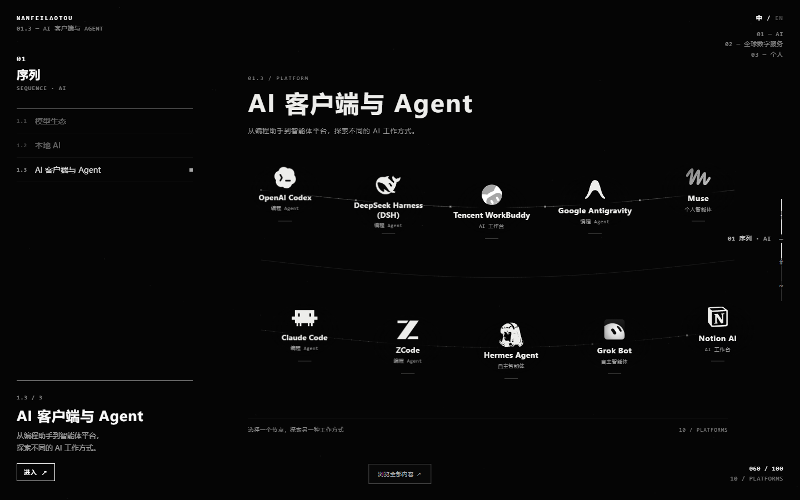
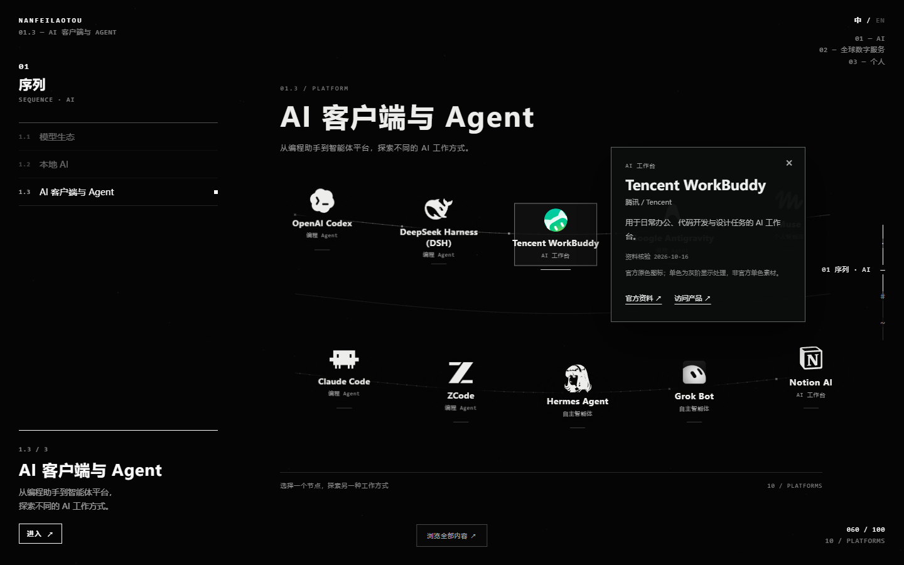
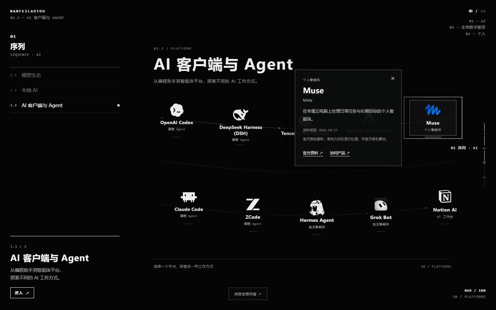
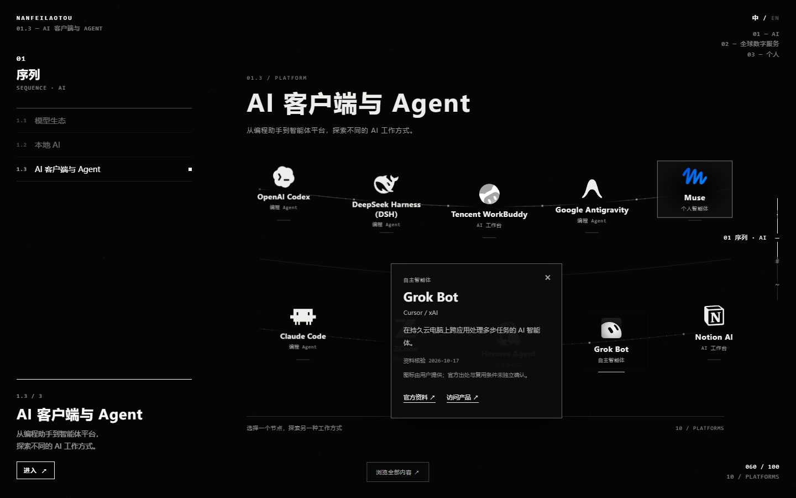

NANFEILAOTOU / AI COLOR REVIEW · 2026-10-17 · LOCAL ONLY
三个新标志，同一个数字空间。
当前 HEAD 保持 b47ac3e。全部修改仅在本地，尚未提交或推送。推荐 B：品牌色随注意力出现。
B · 完全成形的稳定画面
| 窗口 | A 单色 | B 交互显色 | C 少量原色 |
|---|---|---|---|
| 1920×1080 | 完整截图 | 完整截图 | 完整截图 |
| 1440×900 | 完整截图 | 完整截图 | 完整截图 |
| 1366×768 | 完整截图 | 完整截图 | 完整截图 |


交互显色前后








三份图标用同一张原图完成滤镜过渡。悬停前后图像矩形不变，点位、轨迹、相机和 10.58 屏时间轴未修改；无额外品牌漂移或缩放动画。
原有章节回归
与 HEAD 在 16 个固定场景位置做像素对照。固定时间并停用 CSS 过渡后，差异为 0。Agent 样本隐藏有意变化的 DOM，单独比较其 Canvas / WebGL 骨架；其他章节保留完整界面比较。
| 位置 | 基线 | 本地版本 |
|---|---|---|
| 开场 | 截图 | 截图 |
| 模型生态 | 截图 | 截图 |
| Local AI | 截图 | 截图 |
| Global | 截图 | 截图 |
| Personal | 截图 | 截图 |


实测与边界
已检查浮层移动、点击固定、Esc、十节点 Tab、正反滚轮、快速跳转、刷新、前进 / 回退、Resize、DPR 2、减少动态效果、390px 触摸和图片失败后名称回退。正常路径无浏览器错误或失败资源；故意返回 503 的三张 Logo 单独用于降级检查。
1440×900 各采样 200 个预热后的 rAF 应用回调：基线 CPU 平均 / p95 为 0.323 / 0.500ms，本地为 0.391 / 0.700ms；平均 rAF 间隔均约 4.174ms，无长任务。这不是 GPU 耗时或最终显示 FPS 保证。真实手机、Safari、Firefox、低端 GPU 未测。
透明度 / 尺寸审查 · 失败回退 · DPR 2 · 触摸


StarryBlu 复核只补充了来源记录：当前前端处理不改变原图；未来公开生产应发布已处理副本，并排除未处理原图。Global、Personal、卡面原文件和 64,000 点算法均未修改。